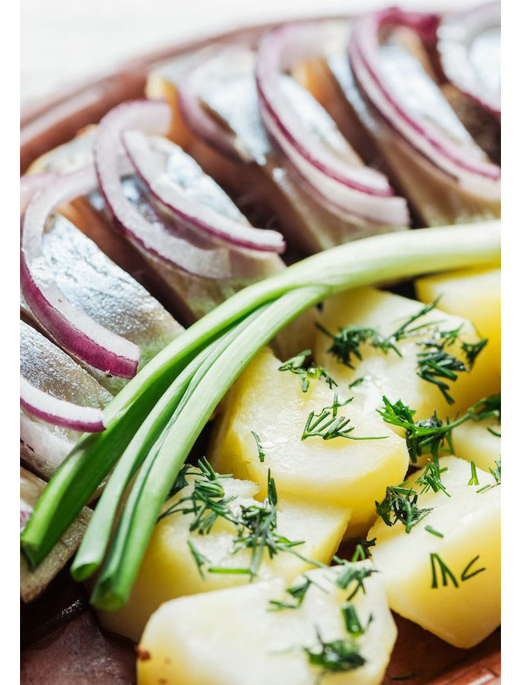

Home
Food
History
Traveling
Finnish cuisine is notable for generally combining traditional country fare and haute cuisine with contemporary continental-style cooking. Fish and meat (usually pork, beef or reindeer) play a prominent role in traditional Finnish dishes in some parts of the country, while the dishes elsewhere have traditionally included various vegetables and mushrooms. Evacuees from Karelia contributed to foods in other parts of Finland in the aftermath of the Continuation War.[1]
Finnish foods often use wholemeal products (rye, barley, oats) and berries (such as bilberries, lingonberries, cloudberries, and sea buckthorn). Milk and its derivatives like buttermilk are commonly used as food, drink or in various recipes. Various turnips were common in traditional cooking, but were replaced with the potato after its introduction in the 18th century.The way of life and culture of Finns was mainly based on agriculture already at prehistoric times. However, in the harsh and cold environment, agriculture was neither a very effective nor secure way of life, so getting food from nature has often been an important secondary livelihood. When crops failed, it might have been the only way to survive. Also, while farms mainly produced plants like crops or turnips, and often families had only some farm animals to get milk products and meat, hunting and especially fishing were important ways to get more protein. Large-scale meat production and therefore meat as a daily food started to emerge only at the beginning of 20th century, after periods of malnutrition in the 19th century caused by failed crops.[citation needed]
In former times, the country's harsh climate meant that fresh fruit and vegetables were largely unavailable for at least nine months of the year, leading to a heavy reliance on staple tubers (initially turnip, later potato), dark rye bread and fermented dairy products, occasionally enlivened with preserved fish and meat. Traditionally, very few spices other than salt were available, and fresh herbs like dill and chives were limited to the summer months. Many Finnish traditional dishes are prepared by stewing them for a long time in an oven, which produces hearty but bland fare. Forests and lakes were historically a major source of food, and produce from forests currently accounts for the distinctive traits in Finnish cuisine. The simplicity of traditional Finnish food has been turned into an advantage by shifting the emphasis to freshness. Modern Finnish restaurateurs now blend high-quality Finnish products with continental cooking techniques. This approach helped Helsinki's Chez Dominique to receive two Michelin stars in 2003. The restaurant closed in 2013.
Internationalization brought imported goods. As pasta, pizza, kebab, and hamburgers were integrated into Finnish menus, they displaced some traditional everyday dishes like kaalilaatikko (cabbage casserole), or herring fillets, which some consider inferior. As of the 20th century, when the majority of Finnish women entered the workforce, many traditional dishes that require long preparation time are reserved for holidays.
Even with modern agriculture and transportation, food remains expensive in Finland relative to other European countries. This is notwithstanding the effect of accession to the European Union in 1995. The consequent elimination of trade barriers led prices of products like grains, meat, and milk to drop as much as 50%.[2] Before that, heavy taxes and outright bans on imports that competed with local produce severely limited the availability of foreign or unseasonal food. Nowadays Finnish supermarkets and restaurants provide a variety of food from all over the world.
Finnish cuisine is very similar to Swedish cuisine. Swedish dishes like Janssons frestelse (janssoninkiusaus), pyttipannu, and gravlax (graavilohi) are common in Finland. The overarching difference is the Finns' preference for unsweetened foods. For example, while traditional Swedish rye bread includes plenty of syrup and spices, Finnish rye bread is unsweetened, even bitter. Finnish cuisine also bears some resemblance to German and Russian cuisines.[3] Sausages and buttered bread (like Butterbrot), and kiisseli (kissel) and lihapiirakka (cf. pirozhki) are similar to their respective German and Russian counterparts. Finnish recipes, however, tend to favour fresh ingredients over canned or pickled foods, as fresh vegetables, fish, and meat are available throughout the year.[4]
